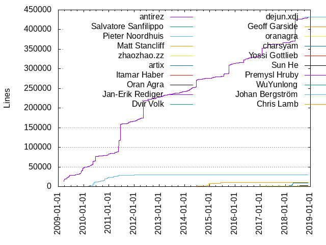
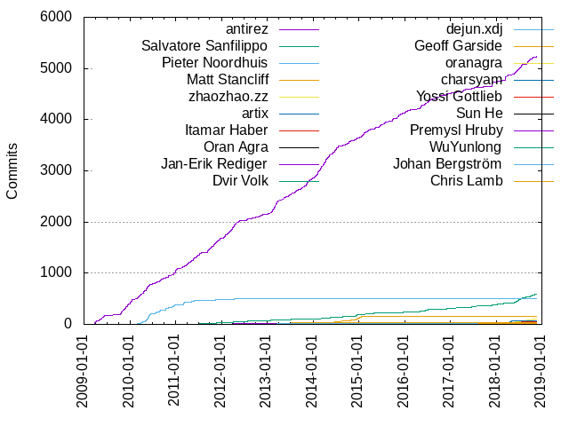

Authors
| Author | Commits (%) | + lines | - lines | First commit | Last commit | Age | Active days | # by commits |
|---|
| antirez | 5234 (69.29%) | 429849 | 223304 | 2009-03-22 | 2018-11-19 | 3529 days, 5:49:23 | 1530 | 1 |
| Salvatore Sanfilippo | 584 (7.73%) | 198 | 45 | 2011-04-11 | 2018-11-22 | 2781 days, 18:36:51 | 308 | 2 |
| Pieter Noordhuis | 510 (6.75%) | 30092 | 13004 | 2010-03-03 | 2013-07-11 | 1225 days, 11:52:27 | 142 | 3 |
| Matt Stancliff | 151 (2.00%) | 10492 | 3057 | 2014-02-10 | 2015-02-24 | 379 days, 0:24:51 | 75 | 4 |
| zhaozhao.zz | 96 (1.27%) | 1067 | 424 | 2017-09-20 | 2018-10-19 | 394 days, 4:28:47 | 58 | 5 |
| artix | 77 (1.02%) | 8918 | 3186 | 2018-01-12 | 2018-11-05 | 297 days, 3:13:21 | 34 | 6 |
| Itamar Haber | 47 (0.62%) | 922 | 294 | 2015-04-21 | 2018-11-02 | 1291 days, 5:03:27 | 33 | 7 |
| Oran Agra | 39 (0.52%) | 2106 | 587 | 2015-03-31 | 2018-09-30 | 1278 days, 11:55:11 | 28 | 8 |
| Jan-Erik Rediger | 34 (0.45%) | 235 | 148 | 2012-07-28 | 2017-04-17 | 1724 days, 2:04:58 | 31 | 9 |
| Dvir Volk | 34 (0.45%) | 873 | 270 | 2016-03-31 | 2018-02-14 | 685 days, 5:36:27 | 21 | 10 |
| dejun.xdj | 30 (0.40%) | 140 | 92 | 2018-04-10 | 2018-08-22 | 134 days, 1:30:57 | 15 | 11 |
| Geoff Garside | 29 (0.38%) | 219 | 109 | 2011-06-16 | 2012-10-17 | 488 days, 23:15:55 | 6 | 12 |
| oranagra | 22 (0.29%) | 1231 | 201 | 2016-05-09 | 2017-02-23 | 290 days, 4:32:04 | 16 | 13 |
| charsyam | 21 (0.28%) | 104 | 47 | 2012-10-25 | 2018-03-21 | 1972 days, 12:14:01 | 20 | 14 |
| Yossi Gottlieb | 20 (0.26%) | 259 | 115 | 2012-12-24 | 2018-06-03 | 1986 days, 16:43:49 | 17 | 15 |
| Sun He | 16 (0.21%) | 91 | 42 | 2014-11-01 | 2016-04-06 | 521 days, 12:09:01 | 10 | 16 |
| Premysl Hruby | 14 (0.19%) | 109 | 89 | 2012-02-26 | 2012-04-05 | 38 days, 22:25:50 | 7 | 17 |
| WuYunlong | 13 (0.17%) | 129 | 25 | 2017-07-14 | 2018-07-20 | 370 days, 23:39:36 | 9 | 18 |
| Johan Bergström | 12 (0.16%) | 70 | 53 | 2013-01-23 | 2014-12-04 | 680 days, 3:16:12 | 5 | 19 |
| Chris Lamb | 11 (0.15%) | 47 | 17 | 2011-11-16 | 2018-08-26 | 2474 days, 20:24:23 | 10 | 20 |
These didn't make it to the top: Guy Benoish, David Carlier, Damian Janowski & Michel Martens, shenlongxing, michael-grunder, Ludovico Magnocavallo, Guy Korland, hrothgar, Pierre Chapuis, dvir volk, Otmar Ertl, Hampus Wessman, YAMAMOTO Takashi, Pedro Melo, Erik Dubbelboer, zhanghailei, youjiali1995, yoav, Saurabh Jha, Michel Martens, Mariano Pérez Rodríguez, Luc Heinrich, Damian Janowski, Alon Diamant, 赵磊, yongman, therealbill, spinlock, root, jybaek, jokea, heqin, clark.kang, Ted Nyman, Stam He, Saj Goonatilleke, Paul Kulchenko, Nathan Florea, NanXiao, Michel Martens & Damian Janowski, Jiahao Huang, Jeremy Zawodny, Jan Oberst, FuGangqiang, Bob Potter, Benjamin Kramer, Anurag Ramdasan, Antonio Ognio, Aman Gupta, Allan, Alex McHale, zionwu, xuzhou, rojingeorge, quiver, mrb, kingsumos, itamar, hylepo, hujie, huangz1990, gnuhpc, chendianqiang, andyli, Yubao Liu, Xiaojie Zhang, Suraj Narkhede, Shen Longxing, Shaun Webb, Serghei Iakovlev, Ryosuke Hasebe, Robey Pointer, Rhommel Lamas, Raymond Myers, Ramon Snir, Qu Chen, Pierre-Yves Ritschard, Paddy Byers, Mustafa Paltun, Mota, Mihir Joshi, Michiel De Mey, Michael Parker, Maxim Zakharov, Madelyn Olson, MOON_CLJ, Leon Chen, Konstantin Merenkov, Kashif Rasul, Jungtaek Lim, Juarez Bochi, Jonah H. Harris, Jakub Wieczorek, Hamid Alaei, Gengliang Wang, David Thomson, Dave Pacheco, Bruno Deferrari, Bruce Merry, Bo Cai, BigCat, Ben Murphy, Artix, Antonio Mallia, Andrey Bugaevskiy, Akos Vandra, 球状闪电, 张文康, zach shipko, yyoshiki41, yoav@monfort.co.il, yihuang, xuxiang, xuchengxuan, xiaoyu, xiaost7, xiaost, wyx, woowenjie, whatacold, wenduo, wangshaonan, vps, vienna, vambo, valentino, ubuntu, tielei, tengfeng, superlogical, sunweinan, sunhe, sskorgal, smly, siahl, rouzier, ripcurld00d, rebx, qinchao, peterpaule, paule, pan.liangp, nashe, miter, minkikim89, minghang.zmh, maya-rv, mattcollier, lsbardel, lorneli, linfangrong, liangsijian, kmiku7, jspraul, jianqingdu, jeesyn.liu, jbergstroem, jamespedwards42, ioddly, ideal, ian, hujiecs, huijing.whj, h0x91b, guiquanz, gechunlin, flowly, dsomeshwar, diegok, deep011, deep, daniele, cubicdaiya, codeeply, charpty, cbgbt, bogdanvlviv, bitterb, azure provisioned user, andrewsensus, Zachary Marquez, Yusaku Kaneta, Yongyue Sun, Yecheng Fu, Xiaochen Wang, Xian Li, Weiliang Li, Wei Jin, Vincent Palmer, Tyler Stromberg, Tommy Wang, Tomasz Poradowski, Tom Kiemes, Tobias Schwab, Tj Holowaychuk, ThePicard, T.J. Schuck, Sébastien Fievet, SungBin_Hong, Steven Penny, Steeve Lennmark, Slobodan Mišković, Sisir Koppaka, Seth Bergman, Sergey Chupov, Sebastian Waisbrot, Schuster, Sascha Roland, Samuel Chou, Sam Hendley, Ryan Biesemeyer, Runzhen Wang, Ruben Bridgewater, Rojin George, Rogerio Goncalves, Rock Li, Richard Li, Remi Collet, Poincare, Pavel Skuratovich, Pavel Rochnyack, Paul Gideon Dann, PatrickJS, Patrick TJ McPhee, O(ʒ), Nenad Merdanovic, Nathan Parry, Nathan Fritz, Nan Xiao, Mukund Sivaraman, Misha Nasledov, Mike Trinkala, Miguel Parramon, Michel Tresseras, Michal Kwiatkowski, Michael Schlenker, Max Vetrov, Matthias Petschick, Matt Robenolt, Matt Arsenault, Masahiko Sawada, Mark Nunberg, Marc-Antoine Perennou, Manuel Meurer, Lynn, Leandro López (inkel), Krzysztof Filipek, Konstantin Tokarev, Kevin Menard, Jérémy Bethmont, Justin Carvalho, Juri M. Vainonen, Jun He, Josiah Carlson, Joshua Anderson, Joseph Jang, Jokea, John.Koepi, John Doe, Joe Pettersson, Jim Howard, Jeffrey Lovitz, Jason Roth, Jason Davies, Jakub Vrana, Jack Drogon, Huachao Huang, Hu Weiwei, Herbert G. Fischer, Haruto Otake, Harmen, Harish Murthy, Harish Mallipeddi, Guo Xiao, Grisha Trubetskoy, Gregory Petrosyan, Greg Hurrell, Glenn Nethercutt, Glauber Costa, Fuxin Hao, Felix Krause, Ezequiel Lovelle, Eiichi Sato, Edgars Irmejs, Dov Murik, Dmitry Chestnykh, Didier Spezia, Deepak Verma, David Tran, David Palm, David Celis, David Cavar, Dave Hoover, Dara Kong, Daniel Shih, Daniel Price, Damien Tournoud, Cong Ding, Chris Thunes, Charles Hooper, CharSyam, Byron Grobe, Bruce Mitchener, Brochen, Brian J. McManus, Brian Hammond, Brad Voth, Bilal Husain, Benjamin Holst, Ben Noordhuis, Ben Dowling, Ben, Baoyi Chen, Ashley Martens, Arnaud Granal, Aric Huang, Anko painting, Aniruddh Chaturvedi, Andy Grunwald, Amit Dey, Amin Mesbah, Alice Kærast, Alexander Zhukov, Alex Suraci, Alex Mitrofanov, Akshay Nagpal, Agis Anastasopoulos, Adam Baldwin, Aaron Rutkovsky, 0x20h
Only top 20 authors shown
Only top 20 authors shown
| Month | Author | Commits (%) | Next top 5 | Number of authors |
|---|
| 2018-11 | antirez | 11 (34.38% of 32) | Salvatore Sanfilippo, yongman, artix, David Carlier, valentino | 8 |
| 2018-10 | antirez | 51 (43.97% of 116) | Salvatore Sanfilippo, zhaozhao.zz, David Carlier, artix, hujie | 14 |
| 2018-09 | antirez | 81 (67.50% of 120) | Salvatore Sanfilippo, Guy Korland, zhaozhao.zz, youjiali1995, Bruce Merry | 15 |
| 2018-08 | antirez | 21 (38.89% of 54) | Salvatore Sanfilippo, zhaozhao.zz, Oran Agra, Chris Lamb, shenlongxing | 9 |
| 2018-07 | antirez | 80 (45.98% of 174) | Salvatore Sanfilippo, zhaozhao.zz, dejun.xdj, WuYunlong, Oran Agra | 20 |
| 2018-06 | antirez | 75 (42.37% of 177) | Salvatore Sanfilippo, Oran Agra, zhaozhao.zz, shenlongxing, dejun.xdj | 22 |
| 2018-05 | antirez | 34 (44.74% of 76) | Salvatore Sanfilippo, dejun.xdj, artix, zhaozhao.zz, 赵磊 | 11 |
| 2018-04 | artix | 21 (39.62% of 53) | antirez, zhaozhao.zz, dejun.xdj, Itamar Haber, 赵磊 | 9 |
| 2018-03 | antirez | 55 (62.50% of 88) | Salvatore Sanfilippo, zhaozhao.zz, artix, Otmar Ertl, charsyam | 8 |
| 2018-02 | antirez | 30 (40.54% of 74) | artix, Salvatore Sanfilippo, Oran Agra, charsyam, Dvir Volk | 9 |
| 2018-01 | antirez | 33 (51.56% of 64) | Salvatore Sanfilippo, artix, zhaozhao.zz, gnuhpc, qinchao | 11 |
| 2017-12 | antirez | 18 (33.96% of 53) | Itamar Haber, Salvatore Sanfilippo, zhaozhao.zz, Dvir Volk, heqin | 10 |
| 2017-11 | antirez | 32 (40.51% of 79) | Salvatore Sanfilippo, zhaozhao.zz, Itamar Haber, Dvir Volk, Yossi Gottlieb | 8 |
| 2017-10 | zhaozhao.zz | 4 (44.44% of 9) | antirez, rouzier | 3 |
| 2017-09 | antirez | 51 (79.69% of 64) | Salvatore Sanfilippo, zhaozhao.zz, Dvir Volk, Oran Agra | 5 |
| 2017-08 | Salvatore Sanfilippo | 2 (25.00% of 8) | jybaek, jianqingdu, jeesyn.liu, antirez, Richard Li | 7 |
| 2017-07 | antirez | 24 (45.28% of 53) | Salvatore Sanfilippo, spinlock, Shaun Webb, Leon Chen, Bo Cai | 15 |
| 2017-06 | antirez | 12 (40.00% of 30) | Salvatore Sanfilippo, xuzhou, Suraj Narkhede, Antonio Mallia, xuchengxuan | 8 |
| 2017-05 | antirez | 22 (95.65% of 23) | Guy Benoish | 2 |
| 2017-04 | antirez | 32 (74.42% of 43) | Salvatore Sanfilippo, 张文康, lorneli, Qu Chen, Jan-Erik Rediger | 7 |
| 2017-03 | Guy Benoish | 3 (27.27% of 11) | antirez, vienna, spinlock, itamar, Salvatore Sanfilippo | 8 |
| 2017-02 | antirez | 14 (53.85% of 26) | Salvatore Sanfilippo, oranagra, minghang.zmh, flowly, charsyam | 6 |
| 2017-01 | antirez | 15 (55.56% of 27) | Salvatore Sanfilippo, oranagra, Jan-Erik Rediger, miter, Mota | 7 |
| 2016-12 | antirez | 27 (51.92% of 52) | Salvatore Sanfilippo, oranagra, wangshaonan, itamar, cbgbt | 13 |
| 2016-11 | antirez | 21 (58.33% of 36) | Salvatore Sanfilippo, oranagra, hylepo, deep011, andyli | 8 |
| 2016-10 | antirez | 25 (65.79% of 38) | Salvatore Sanfilippo, jybaek, yyoshiki41, sunhe, deep | 10 |
| 2016-09 | antirez | 40 (86.96% of 46) | Salvatore Sanfilippo, wyx, charsyam, Dvir Volk, Alexander Zhukov | 6 |
| 2016-08 | antirez | 14 (73.68% of 19) | Salvatore Sanfilippo, oranagra, Qu Chen, Guo Xiao | 5 |
| 2016-07 | antirez | 57 (91.94% of 62) | sskorgal, oranagra, Salvatore Sanfilippo, John.Koepi, Itamar Haber | 6 |
| 2016-06 | antirez | 48 (48.48% of 99) | Salvatore Sanfilippo, Yossi Gottlieb, Pierre Chapuis, rojingeorge, zach shipko | 14 |
| 2016-05 | antirez | 41 (50.62% of 81) | Salvatore Sanfilippo, oranagra, Dvir Volk, whatacold, wenduo | 12 |
| 2016-04 | antirez | 38 (55.88% of 68) | Dvir Volk, Oran Agra, Sun He, Itamar Haber, Ramon Snir | 12 |
| 2016-03 | antirez | 10 (58.82% of 17) | Ryosuke Hasebe, Yossi Gottlieb, Sun He, Salvatore Sanfilippo, Dvir Volk | 7 |
| 2016-02 | antirez | 16 (61.54% of 26) | Itamar Haber, Salvatore Sanfilippo, yoav@monfort.co.il, David Cavar | 5 |
| 2016-01 | antirez | 46 (83.64% of 55) | Salvatore Sanfilippo, Itamar Haber, root, Saurabh Jha, Ruben Bridgewater | 8 |
| 2015-12 | antirez | 32 (80.00% of 40) | Salvatore Sanfilippo, Paul Kulchenko, daniele, Sun He | 5 |
| 2015-11 | antirez | 64 (87.67% of 73) | Saurabh Jha, Salvatore Sanfilippo, Joe Pettersson, Jan-Erik Rediger, Itamar Haber | 6 |
| 2015-10 | antirez | 32 (91.43% of 35) | David Thomson, Salvatore Sanfilippo | 3 |
| 2015-09 | antirez | 39 (92.86% of 42) | Salvatore Sanfilippo, ubuntu | 3 |
| 2015-08 | antirez | 20 (90.91% of 22) | kmiku7, Sebastian Waisbrot | 3 |
| 2015-07 | antirez | 47 (87.04% of 54) | Salvatore Sanfilippo, Yongyue Sun, Tom Kiemes, Rogerio Goncalves, Jiahao Huang | 6 |
| 2015-06 | antirez | 45 (90.00% of 50) | Jan-Erik Rediger, linfangrong, Salvatore Sanfilippo, MOON_CLJ | 5 |
| 2015-05 | antirez | 41 (70.69% of 58) | Salvatore Sanfilippo, Ben Murphy, therealbill, clark.kang, Jungtaek Lim | 8 |
| 2015-04 | antirez | 7 (31.82% of 22) | Salvatore Sanfilippo, FuGangqiang, Jan-Erik Rediger, Itamar Haber, therealbill | 10 |
| 2015-03 | antirez | 42 (87.50% of 48) | Salvatore Sanfilippo, superlogical, Oran Agra, Michel Martens | 5 |
| 2015-02 | antirez | 70 (70.00% of 100) | Salvatore Sanfilippo, Sun He, Matt Stancliff, Jan-Erik Rediger, Chris Lamb | 13 |
| 2015-01 | antirez | 54 (70.13% of 77) | Matt Stancliff, Salvatore Sanfilippo, mattcollier, Jungtaek Lim, Jan-Erik Rediger | 7 |
| 2014-12 | antirez | 39 (38.61% of 101) | Salvatore Sanfilippo, Matt Stancliff, Sun He, Alon Diamant, Serghei Iakovlev | 15 |
| 2014-11 | antirez | 18 (38.30% of 47) | Matt Stancliff, Sun He, Salvatore Sanfilippo, Pierre-Yves Ritschard, Mihir Joshi | 8 |
| 2014-10 | antirez | 55 (74.32% of 74) | Matt Stancliff, Salvatore Sanfilippo, zhanghailei, h0x91b, Rhommel Lamas | 9 |
| 2014-09 | antirez | 33 (70.21% of 47) | Salvatore Sanfilippo, Matt Stancliff, xiaost, Yossi Gottlieb, Miguel Parramon | 10 |
| 2014-08 | Matt Stancliff | 21 (45.65% of 46) | antirez, Paddy Byers, Mariano Pérez Rodríguez, Jan-Erik Rediger, T.J. Schuck | 9 |
| 2014-07 | antirez | 75 (80.65% of 93) | Matt Stancliff, Salvatore Sanfilippo, vps, siahl, michael-grunder | 12 |
| 2014-06 | antirez | 77 (72.64% of 106) | Matt Stancliff, Salvatore Sanfilippo, zionwu, kingsumos, Jan-Erik Rediger | 7 |
| 2014-05 | antirez | 68 (75.56% of 90) | Matt Stancliff, Jan-Erik Rediger, Salvatore Sanfilippo, Akos Vandra, zionwu | 10 |
| 2014-04 | antirez | 100 (77.52% of 129) | Matt Stancliff, Salvatore Sanfilippo, yoav, Raymond Myers, ripcurld00d | 14 |
| 2014-03 | antirez | 125 (74.40% of 168) | Matt Stancliff, Salvatore Sanfilippo, Jan-Erik Rediger, zhanghailei, cubicdaiya | 9 |
| 2014-02 | antirez | 102 (85.00% of 120) | Matt Stancliff, Salvatore Sanfilippo, michael-grunder, PatrickJS, Jan-Erik Rediger | 7 |
| 2014-01 | antirez | 78 (96.30% of 81) | Xiaojie Zhang, Aaron Rutkovsky | 3 |
| 2013-12 | antirez | 55 (77.46% of 71) | Salvatore Sanfilippo, Anurag Ramdasan, zhanghailei, codeeply, Yossi Gottlieb | 9 |
| 2013-11 | antirez | 90 (90.91% of 99) | Yubao Liu, Salvatore Sanfilippo, xuxiang, huangz1990, Ted Nyman | 8 |
| 2013-10 | antirez | 54 (96.43% of 56) | SungBin_Hong, Michael Parker | 3 |
| 2013-09 | antirez | 33 (97.06% of 34) | Michel Martens | 2 |
| 2013-08 | antirez | 48 (88.89% of 54) | Salvatore Sanfilippo, Maxim Zakharov, yihuang, Jan-Erik Rediger | 5 |
| 2013-07 | antirez | 47 (82.46% of 57) | Salvatore Sanfilippo, Allan, Ted Nyman, Pieter Noordhuis, Jan-Erik Rediger | 7 |
| 2013-06 | antirez | 28 (84.85% of 33) | Salvatore Sanfilippo, Jan-Erik Rediger | 3 |
| 2013-05 | antirez | 55 (87.30% of 63) | charsyam, Jiahao Huang, ioddly, Salvatore Sanfilippo, NanXiao | 7 |
| 2013-04 | antirez | 32 (86.49% of 37) | xiaost7, charsyam, Salvatore Sanfilippo, Pieter Noordhuis, Michel Martens | 6 |
| 2013-03 | antirez | 114 (87.02% of 131) | Johan Bergström, Salvatore Sanfilippo, charsyam, Stam He, NanXiao | 9 |
| 2013-02 | antirez | 99 (85.34% of 116) | Salvatore Sanfilippo, charsyam, Stam He, Steven Penny, Rock Li | 10 |
| 2013-01 | antirez | 39 (62.90% of 62) | Salvatore Sanfilippo, Johan Bergström, charsyam, guiquanz, bitterb | 14 |
| 2012-12 | antirez | 10 (52.63% of 19) | yoav, Salvatore Sanfilippo, Yossi Gottlieb, Patrick TJ McPhee, Marc-Antoine Perennou | 8 |
| 2012-11 | antirez | 41 (85.42% of 48) | charsyam, Salvatore Sanfilippo, Yecheng Fu, Matt Arsenault | 5 |
| 2012-10 | antirez | 19 (55.88% of 34) | Geoff Garside, Salvatore Sanfilippo, YAMAMOTO Takashi, charsyam, Schuster | 10 |
| 2012-09 | antirez | 15 (93.75% of 16) | Salvatore Sanfilippo | 2 |
| 2012-08 | antirez | 19 (76.00% of 25) | Salvatore Sanfilippo, Pieter Noordhuis, Tobias Schwab, Jokea | 5 |
| 2012-07 | antirez | 21 (46.67% of 45) | Salvatore Sanfilippo, YAMAMOTO Takashi, Saj Goonatilleke, mrb, Pieter Noordhuis | 11 |
| 2012-06 | antirez | 12 (66.67% of 18) | jokea, dvir volk, Ted Nyman, Salvatore Sanfilippo, Geoff Garside | 7 |
| 2012-05 | antirez | 38 (84.44% of 45) | Pieter Noordhuis, xiaoyu, quiver, jokea, Salvatore Sanfilippo | 6 |
| 2012-04 | antirez | 111 (75.51% of 147) | Salvatore Sanfilippo, Pieter Noordhuis, Premysl Hruby, Erik Dubbelboer, rebx | 11 |
| 2012-03 | antirez | 79 (80.61% of 98) | Premysl Hruby, Salvatore Sanfilippo, Pieter Noordhuis, Dave Pacheco, quiver | 11 |
| 2012-02 | antirez | 66 (86.84% of 76) | Salvatore Sanfilippo, Premysl Hruby, Pieter Noordhuis, lsbardel, Jakub Wieczorek | 6 |
| 2012-01 | antirez | 50 (78.12% of 64) | Pieter Noordhuis, Salvatore Sanfilippo, jokea, Mukund Sivaraman, Michal Kwiatkowski | 8 |
| 2011-12 | antirez | 57 (90.48% of 63) | Salvatore Sanfilippo, BigCat, diegok, Kashif Rasul | 5 |
| 2011-11 | antirez | 81 (81.00% of 100) | Salvatore Sanfilippo, Pieter Noordhuis, woowenjie, jbergstroem, Jérémy Bethmont | 9 |
| 2011-10 | antirez | 64 (74.42% of 86) | Salvatore Sanfilippo, dvir volk, Nathan Florea, Jan Oberst, Pieter Noordhuis | 9 |
| 2011-09 | antirez | 77 (85.56% of 90) | Salvatore Sanfilippo, Geoff Garside, Konstantin Tokarev, Juri M. Vainonen, Hampus Wessman | 6 |
| 2011-08 | Pieter Noordhuis | 8 (61.54% of 13) | antirez, vambo, Poincare, Konstantin Merenkov | 5 |
| 2011-07 | antirez | 52 (85.25% of 61) | Pieter Noordhuis, Hampus Wessman, Tyler Stromberg, Salvatore Sanfilippo, Bruce Mitchener | 6 |
| 2011-06 | antirez | 47 (62.67% of 75) | Geoff Garside, Salvatore Sanfilippo, Hampus Wessman, Pieter Noordhuis, Pedro Melo | 7 |
| 2011-05 | antirez | 77 (81.91% of 94) | Pieter Noordhuis, Pierre Chapuis | 3 |
| 2011-04 | antirez | 57 (71.25% of 80) | Pieter Noordhuis, Salvatore Sanfilippo | 3 |
| 2011-03 | antirez | 45 (54.88% of 82) | Pieter Noordhuis | 2 |
| 2011-02 | antirez | 26 (89.66% of 29) | Pieter Noordhuis, Paul Gideon Dann | 3 |
| 2011-01 | antirez | 57 (87.69% of 65) | Pieter Noordhuis | 2 |
| 2010-12 | antirez | 75 (61.48% of 122) | Pieter Noordhuis, Jonah H. Harris, Didier Spezia | 4 |
| 2010-11 | antirez | 38 (53.52% of 71) | Pieter Noordhuis, Damian Janowski & Michel Martens, Tj Holowaychuk, Michel Martens & Damian Janowski | 5 |
| 2010-10 | Pieter Noordhuis | 31 (55.36% of 56) | antirez | 2 |
| 2010-09 | antirez | 31 (54.39% of 57) | Pieter Noordhuis, Pedro Melo, Robey Pointer, Anko painting | 5 |
| 2010-08 | antirez | 47 (53.41% of 88) | Pieter Noordhuis | 2 |
| 2010-07 | antirez | 41 (77.36% of 53) | Pieter Noordhuis, Benjamin Kramer | 3 |
| 2010-06 | Pieter Noordhuis | 56 (62.22% of 90) | antirez, Robey Pointer | 3 |
| 2010-05 | Pieter Noordhuis | 102 (50.00% of 204) | antirez, Bruno Deferrari, Vincent Palmer, Josiah Carlson, Ashley Martens | 6 |
| 2010-04 | antirez | 66 (68.04% of 97) | Pieter Noordhuis, Konstantin Merenkov, Alex McHale | 4 |
| 2010-03 | antirez | 85 (69.11% of 123) | Pieter Noordhuis, Antonio Ognio, Michel Martens & Damian Janowski, Damian Janowski & Michel Martens, Alex McHale | 9 |
| 2010-02 | antirez | 18 (90.00% of 20) | Sam Hendley, Damian Janowski | 3 |
| 2010-01 | antirez | 76 (100.00% of 76) | | 1 |
| 2009-12 | antirez | 66 (100.00% of 66) | | 1 |
| 2009-11 | antirez | 88 (96.70% of 91) | root, ian, Harish Mallipeddi | 4 |
| 2009-10 | antirez | 58 (100.00% of 58) | | 1 |
| 2009-09 | antirez | 12 (100.00% of 12) | | 1 |
| 2009-08 | antirez | 1 (100.00% of 1) | | 1 |
| 2009-07 | antirez | 7 (100.00% of 7) | | 1 |
| 2009-06 | antirez | 30 (81.08% of 37) | hrothgar | 2 |
| 2009-05 | antirez | 57 (93.44% of 61) | Aman Gupta, Ludovico Magnocavallo | 3 |
| 2009-04 | antirez | 49 (85.96% of 57) | Ludovico Magnocavallo, Bob Potter | 3 |
| 2009-03 | antirez | 38 (84.44% of 45) | Luc Heinrich, Ludovico Magnocavallo, Brian Hammond | 4 |
| Year | Author | Commits (%) | Next top 5 | Number of authors |
|---|
| 2018 | antirez | 491 (47.76% of 1028) | Salvatore Sanfilippo, artix, zhaozhao.zz, dejun.xdj, Oran Agra | 69 |
| 2017 | antirez | 227 (53.29% of 426) | Salvatore Sanfilippo, zhaozhao.zz, Itamar Haber, Dvir Volk, Guy Benoish | 46 |
| 2016 | antirez | 383 (63.94% of 599) | Salvatore Sanfilippo, oranagra, Dvir Volk, Yossi Gottlieb, Itamar Haber | 59 |
| 2015 | antirez | 493 (79.39% of 621) | Salvatore Sanfilippo, Matt Stancliff, Jan-Erik Rediger, Itamar Haber, Sun He | 40 |
| 2014 | antirez | 785 (71.23% of 1102) | Matt Stancliff, Salvatore Sanfilippo, Jan-Erik Rediger, Sun He, michael-grunder | 62 |
| 2013 | antirez | 694 (85.36% of 813) | Salvatore Sanfilippo, Johan Bergström, charsyam, Jan-Erik Rediger, Stam He | 49 |
| 2012 | antirez | 481 (75.75% of 635) | Salvatore Sanfilippo, Pieter Noordhuis, Premysl Hruby, YAMAMOTO Takashi, Geoff Garside | 52 |
| 2011 | antirez | 642 (76.61% of 838) | Pieter Noordhuis, Salvatore Sanfilippo, Geoff Garside, Hampus Wessman, dvir volk | 31 |
| 2010 | antirez | 632 (59.79% of 1057) | Pieter Noordhuis, Damian Janowski & Michel Martens, Pedro Melo, Michel Martens & Damian Janowski, Benjamin Kramer | 23 |
| 2009 | antirez | 406 (93.33% of 435) | Ludovico Magnocavallo, hrothgar, Luc Heinrich, Bob Potter, Aman Gupta | 10 |
| Domains | Total (%) |
|---|
| gmail.com | 6749 (89.34%) |
|---|
| genges.com | 151 (2.00%) |
|---|
| alibaba-inc.com | 129 (1.71%) |
|---|
| redislabs.com | 111 (1.47%) |
|---|
| geoffgarside.co.uk | 29 (0.38%) |
|---|
| metal.(none) | 25 (0.33%) |
|---|
| 163.com | 24 (0.32%) |
|---|
| archlinux.us | 23 (0.30%) |
|---|
| users.noreply.github.com | 15 (0.20%) |
|---|
| fnordig.de | 14 (0.19%) |
|---|